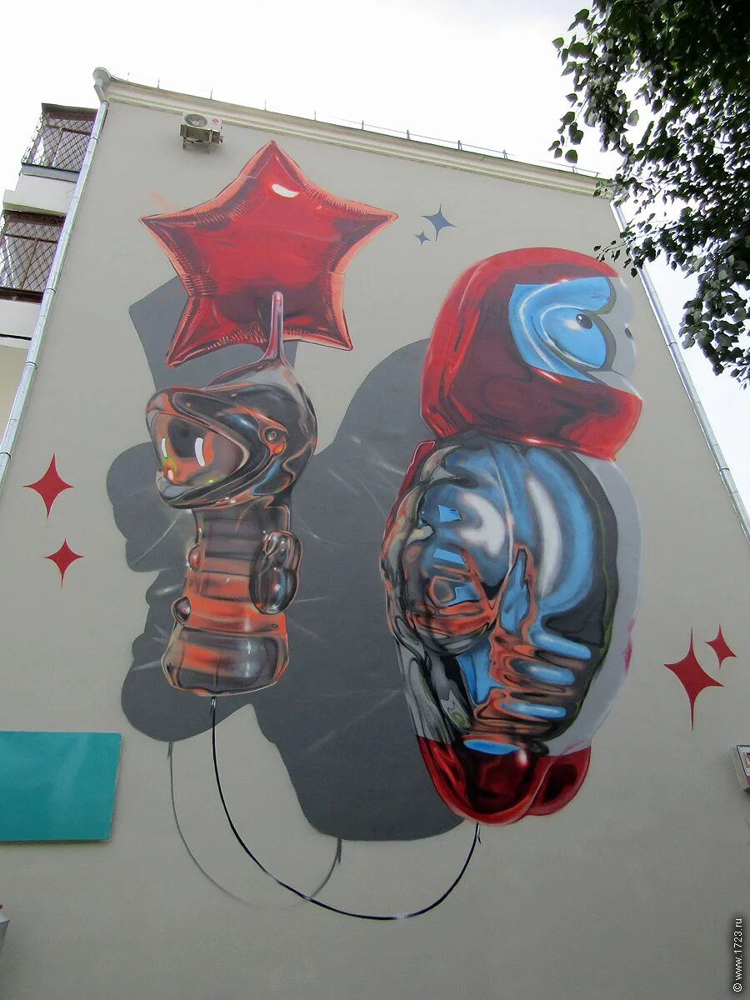

Автор: Fanakapan
Адрес: ул. Попова, 9
Год создания: 2019
«We are not alone» — арт-объект, созданный в рамках Международного фестиваля уличного искусства «Стенограффия», который ежегодно проходит в Екатеринбурге в первые выходные июля. Автор работы — лондонский художник Fanakapan, которого организаторы фестиваля называют самым загадочным и космическим участником.
Вдохновившись советскими елочными игрушками, художник изобразил на фасаде здания космонавта в компании инопланетянина. Работая с эффектами отражения света и прозрачностью предметов, Fanakapan создал гиперреалистичное изображение, которое будто оживает на стене.
Fanakapan известен как пионер стиля balloon letters — гиперреалистичных граффити, которые выглядят так, будто созданы из фольгированных воздушных шаров. Эта работа стала еще одним ярким примером его мастерства и напоминанием: мы не одни во Вселенной.